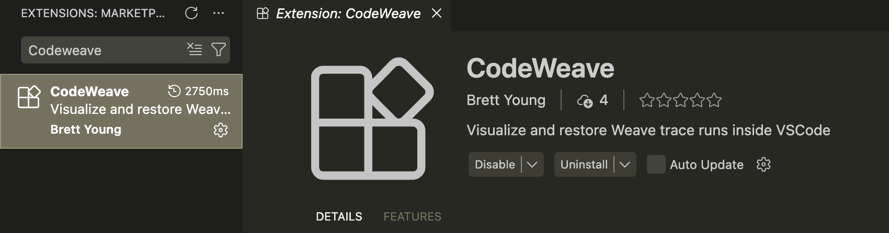
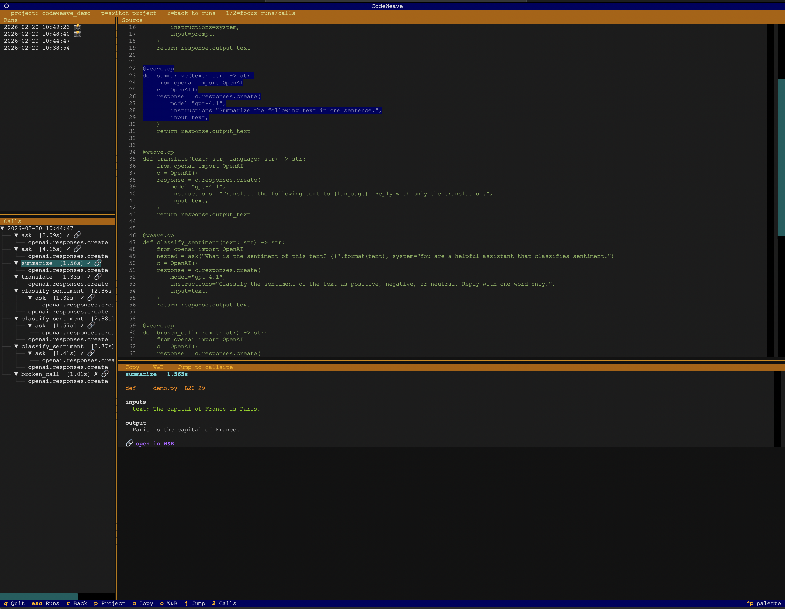
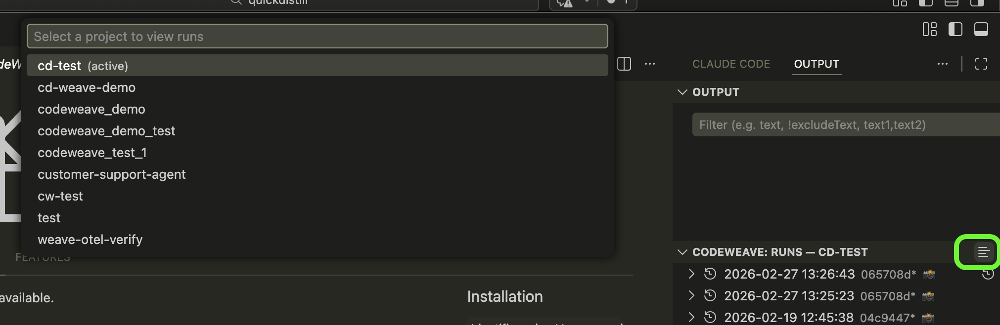
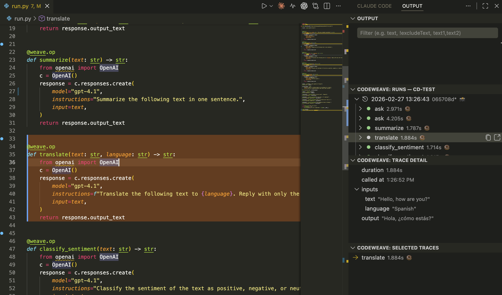

Visualize and restore Weave trace runs inside VSCode
weavecode PyPI package — it requires adding one line to your existing code. If you'd prefer zero changes to your existing code at all, see Custom weave fork at the bottom of this page.
Open VSCode, go to the Extensions panel (⇧⌘X), search CodeWeave, and click Install.

weavecodeUse this if you want to keep using the official weave package from PyPI and just add CodeWeave on top. No fork, no custom install — works with production releases of weave.
weavecode on PyPI — the name codeweave was already taken by an unrelated project.pip install weave weavecode
Then wrap your weave.init() call with weavecode.init(). Everything else stays exactly the same.
import weave import weavecode weavecode.init(weave.init("my-project"), git_path="/path/to/your/repo") # decorate your functions as normal @weave.op def my_fn(): ... # ... your code ... weave.finish()
You can also set the git path via environment variable instead of passing it in code:
export WEAVE_GIT_PATH=/path/to/your/repo
weavecodeIn addition to the VSCode extension, weavecode ships a standalone terminal UI you can run anywhere — no VSCode required. Just run:
weavecode
Or pass a project name directly:
weavecode my-project
The TUI shows all your logged runs, the full call tree for each run, source code at snapshot time with highlighted traces, and inputs/outputs/errors in a detail panel. Runs update in real time as new ones are logged.

The weavecode terminal UI — browse runs, inspect call trees, and view the exact source code from the time of the run.
p pick project ·
r back to runs ·
o open in W&B ·
c copy trace ·
j jump to callsite in VSCode ·
q quit
Open the CodeWeave panel in the sidebar. Click the project picker at the top to select your project — all projects with logged runs appear in the dropdown.

Select a project to browse its runs. Each run shows a timestamp and the git commit it was recorded at.
Click any run to expand its calls. Select a call to see inputs, outputs, duration, and the exact line of code it was called from — highlighted live in the editor.

If you'd prefer not to add any weavecode import to your code, this option bakes the CodeWeave integration directly into weave. The API is identical to the official package — no wrapper calls needed.
pip install git+https://github.com/bdytx5/codeweave_package.git
Then just use weave directly:
import weave weave.set_git_path("/path/to/your/repo") # or set WEAVE_GIT_PATH env var weave.init("my-project") @weave.op def my_fn(): ... # ... your code ... weave.finish()
You can also set the git path via environment variable:
export WEAVE_GIT_PATH=/path/to/your/repo
weave install. Use weavecode instead if you want to keep the official weave package untouched and don't mind adding one line to your code.